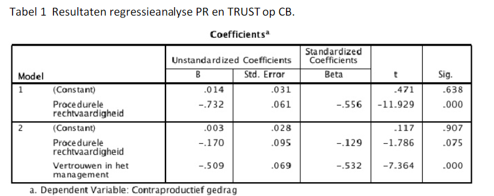

| Tag | Value |
|---|---|
| file | Inferential_Statistics_vufsw-mediation-0303-nl_vufsw-mediation-0303-nl |
| name | vufsw-mediation-0303-nl |
| section | inferential statistics/regression/multiple linear regression/mediation |
| type | num |
| solution | -0.562 |
| tolerance | 0.000999999999999945 |
| Type | calculation |
| Program | calculator |
| Language | dutch |
| Level | statistical reasoning |
Het idee is dat onrechtvaardigheid zal leiden tot contraproductief gedrag (counter productive behavior = “CB”), zoals te laat komen, stelen van kantoorartikelen, weinig collegiaal gedrag en dergelijke. De vraagstelling is welk mechanisme het eventueel verband tussen rechtvaardigheid en “CB” veroorzaakt. Het idee is dat onrechtvaardige procedures leiden tot meer “CB”. Vervolgens kunnen we ons afvragen waarom procedurele onrechtvaardigheid tot “CB” leidt. Een mogelijkheid is dat procedurele onrechtvaardigheid het vertrouwen in het management ondermijnt en dat het gebrek in vertrouwen zal leiden tot meer “CB”. Omgekeerd zal het ervaren van procedurele rechtvaardigheid (“PR”) het vertrouwen (“TRUST”) verhogen en daardoor het contraproductieve gedrag (“CB”) doen afnemen.
We krijgen de onderstaande output van een hiërarchische regressie
behorende bij dit onderzoek.
Wat is het ongestandaardiseerde indirecte effect van deze
mediatieanalyse?
